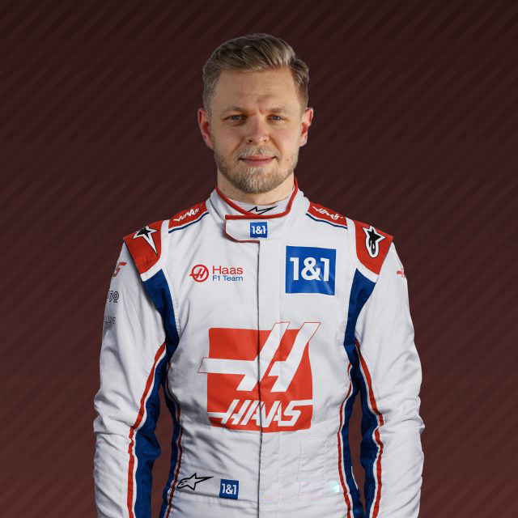

Driver Profile
This is a driver profile of Season 2022 - 2023
KEVIN
MAGNUSSEN

Biography
Call him a lone ranger or a maverick, but Magnussen is back in Formula 1 for one reason only – to race.
He may be a second-generation F1 driver – following his father, Jan, onto the grid – but Magnussen’s
idols are from the ‘golden era’ of Grand Prix racing when the likes of Juan Manuel Fangio and Stirling
Moss risked it all for the love of the sport.
The Roskilde racer’s own prowess was proven on debut for McLaren, who guided him through the junior
ranks, when he cruised into the top-three at the 2014 Australian Grand Prix, becoming the first Dane to
claim a podium in F1.
Other champagne moments have been more difficult to find, as he left McLaren behind for a season with
Renault, before settling in for four among kindred spirits at Haas. And now he’s back with the US team –
after a year away in the States, racing Indy and sportscars among other things.
His meaty manoeuvres and elbows-out approach have earned him a bad-boy reputation on track, something
that still leaves him baffled. Out of the car Magnussen is laidback and affable. After all he has his
dream job – and he is only here to race.
TEAM
Haas F1 Team
COUNTRY
Denmark
DATE OF
BIRTH
05 OCT 1992
NUMBER
20
Record
Podiums : 1
Points : 158
Grands Prix entered : 120
World Championships : N/A
Highest race finish : 2 (x1)
Highest grid position : 4